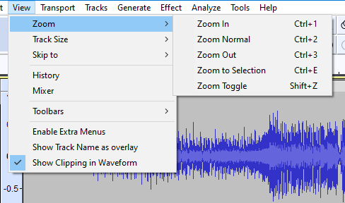

View Menu: Zoom
The Zoom In and Zoom Out commands will attempt to keep the editing cursor position, or the selection, centered in the track display.
- 
Zooming is usually done using the top 5 buttons on the Edit Toolbar
|
Zoom In Ctrl + 1
- : Doubles the current zoom level.
Zooms in on the horizontal axis of the audio, displaying more detail over a shorter length of time. You can also use the Zoom tool from the Tools Toolbar to zoom in on a particular part of the window.
Zoom Normal Ctrl + 2
- : Reverts back to Audacity's default zoom, where you can see 5 - 10 seconds at a time.
Zooms to the default view, which displays about one inch per second. It centers the cursor in the track display, or if you have a selection it will attempt to keep some part of a selection visible.
Zoom Out Ctrl + 3
- : Cuts the current zoom level in half.
Zooms out, displaying less detail over a greater length of time.
Zoom to Selection Ctrl + E
- : If you have audio selected, this zooms and scrolls so that the selection just fits in the window.
Zooms in or out so that the selected audio fills the width of the project window. Its most useful purpose is to zoom in when the selection is only a small part of the visible waveform.
If there is a region of audio selected and it is not visible on the screen, the Zoom to Selection command will move the selection to fill the track display.
Zoom Toggle Shift + Z
Toggles between two pre-defined zoom levels, these are user selectable in Tracks Preferences.
Defaults are normal Default Zoom level and 4 Pixels per Sample (which shows a fraction of a second of audio as samples).